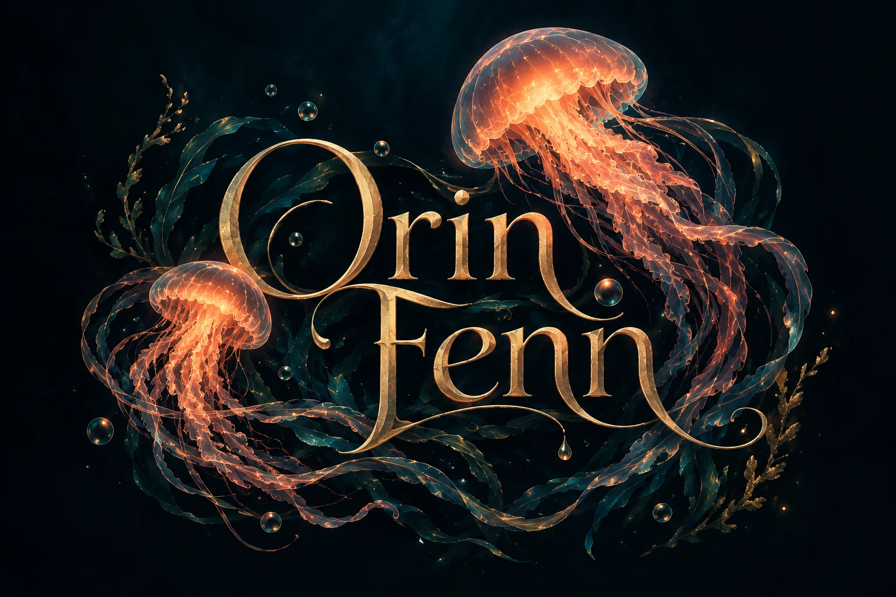
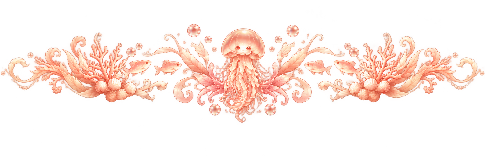
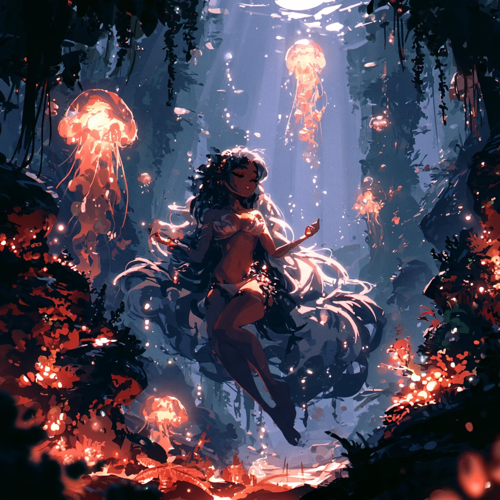
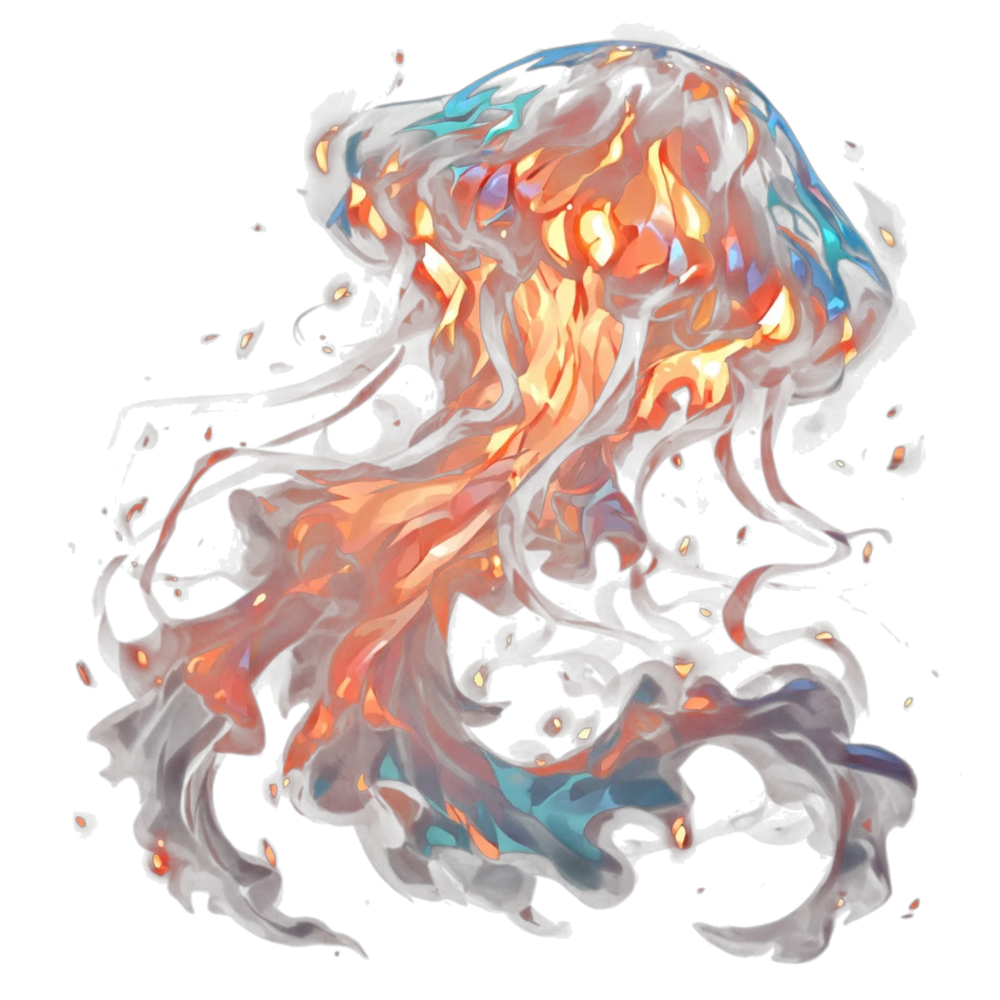

Anything
i am willing to make anything that does not violate ToS
anything except
- underage
- bestiality
- full-blood relations

a jellyfish floating through the sea of life
bots · worlds · homepages


a jellyfish floating through the sea of life
happy as a clam when creating bots and worlds
i am willing to make anything that does not violate ToS
anything except
i do commissions for saucepan or janitor homepages and HTML templates
want to see examples or talk pricing? DM me on Discord @orinfenn
check out my carrd for more info on which seas to find me in
or DM me on Discord @orinfenn

trust the process of creation. go with the flow, as cliche as it is.
— Orin Fenn